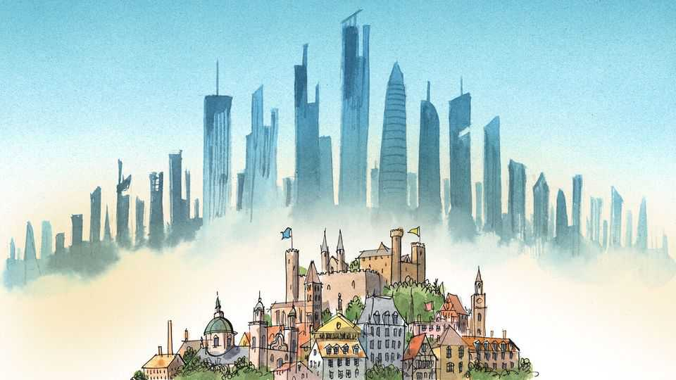

Europe has lots of pleasant cities but too few that matter
A tale of too many cities

Oct 15th 2026
Is Paris a big city? It depends on whom you ask. A tourist with only a few days to take in its sights will probably find it dauntingly large. To the French it occasionally feels smothering, the bloated administrative headquarters of an over-centralised country. But after 20-odd centuries of existence, the Ville Lumière has a distinction besides that of top tourist destination or national capital: it is by some distance the European Union’s largest city, a metropolitan standard-bearer for a largely urbanised continent. And seen through that lens it starts looking rather…petite. With one-third the population of Shanghai and less than half the economic output of New York, Paris makes an underwhelming urban flagship for a union of 450m people. Europe has perfected the art of making cityscapes pleasant. Making them mighty engines of economic dynamism is another matter.
Europe’s cities are a wonder to behold. A stroll through Lisbon, Stockholm or Krakow is a fine way to while away an afternoon. The latest ranking of the best places in the world to live, compiled by the Economist Intelligence Unit, our sister company, puts Copenhagen and Vienna at the very top. (Indonesia’s Jakarta, the world’s largest city, with a population of 42m, comes in 132nd.) But what they make up for in charm Euro-cities often lack in size, and thus commercial heft. The ten biggest urban areas in America account for a third of its economic output. In the EU the figure is nearer one-sixth, according to Oxford Economics, a consultancy. Even China and India, with their vast rural hinterlands, have a bigger share of output coming out of their largest cities. Of the 82 urban areas estimated by the UN to have a population of more than 5m people, Paris (in 36th place, with just under 10m people) and Madrid (72nd) are the only ones in the EU that make the cut.
Et alors? some might ask. Who would want a Jakarta-sur-Seine, a Tokyo am Rhein? Economists might. For them, when it comes to cities, bigger nearly always means better. Cramming more humans near each other creates more opportunities to match productive workers with innovative firms. The result is the sort of economic dynamism Europe desperately needs. Doubling the population of a city is associated with a double-digit growth in productivity, according to the OECD, a club of mostly rich countries (even smaller increases make a sizeable difference). In part that is because more productive people will flock to metropolises to seize opportunities. But even accounting for that factor, bigger cities make everyone richer just by making it easier for ideas, skills and opportunities to circulate. World-class amenities, from football stadiums to opera houses, help make up for congestion, high rents and cramped living conditions.
Europeans like their cities big, but not too big—and for there to be lots of them. This is partly for historical reasons. Centuries of weak central states and municipal independence led to a dense lattice of powerful cities. Many gradually seeped out of their tiny medieval boundaries, sometimes despite planning laws designed to protect against unsightly sprawl. In time European conurbations settled into the shape and size that made sense given their respective countries (or regions, in the case of Germany, a place with lots of competing urban centres). Even a city with grand aspirations could not outgrow its immediate national confines.
What is perhaps surprising is that this pattern of urban development has so far survived the past few decades of European integration. In theory businesses and citizens ought to think of their “home” as the EU, rather than individual countries, the better to compete against rivals in China and America. A single market in workers and ideas should have resulted in a handful of megalopolises acting as powerhouses for an integrated EU economy, not just a national one. A few European cities have specialised into continental hubs of global import: Milan in fashion, Eindhoven in semiconductor-manufacturing equipment, Brussels in crafting regulations. But none has the oomph of New York and its role in global finance, for example, or Shenzhen and manufacturing.
The result is the dispersal of riches across multiple midsize cities, many of them national capitals, yet none of them quite up to global snuff (sorry, Prague). In a world of winner-takes-most globalised industries such as artificial intelligence, this is a sizeable disadvantage. A bright graduate from America’s 50th-biggest urban economy (Charleston, South Carolina) with dreams of working in tech will undoubtedly make for San Francisco, the gateway to Silicon Valley. His counterpart in the EU’s 50th-biggest city (Graz in Austria) will have many options. Should she go to Silicon Allee in Berlin, Silicon Docks in Dublin, perhaps the Silicon Sentier in Paris? Such dispersion gnaws at European competitiveness.
Europeans strolling through their souped-up towns might console themselves with two thoughts. The first is that it may be possible to replicate the advantages of metropolises by connecting lots of nearby midsize cities. Could Amsterdam, Antwerp, Cologne and Brussels—all of them a short hop away on high-speed trains—not join forces to create a mega-hub that could turn them jointly into one city of global scale? Alas not: the advantages of being in the same place seem to decay sharply over even short distances (especially if spread across different countries).
The second is that being a pleasant place might matter more than eking out that last ounce of growth. Having lots of middling cities means none is likely to disconnect from its home polities. In an age when plenty of voters feel “left behind” by out-of-touch metropolitan types, that may be worth something. With its dense thicket of wee cities, Europe has no New York or Los Angeles to dominate global industries. But neither does it have vast swathes of “flyover country” for urban elites to sneer at.■